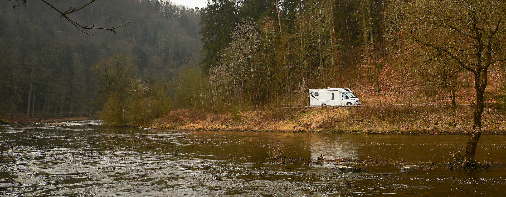
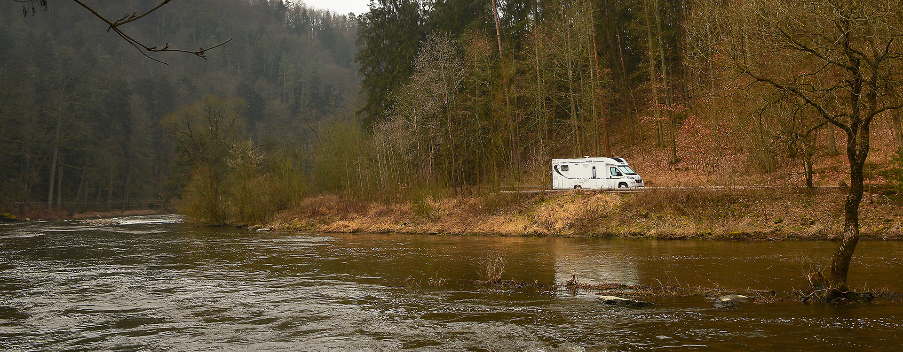
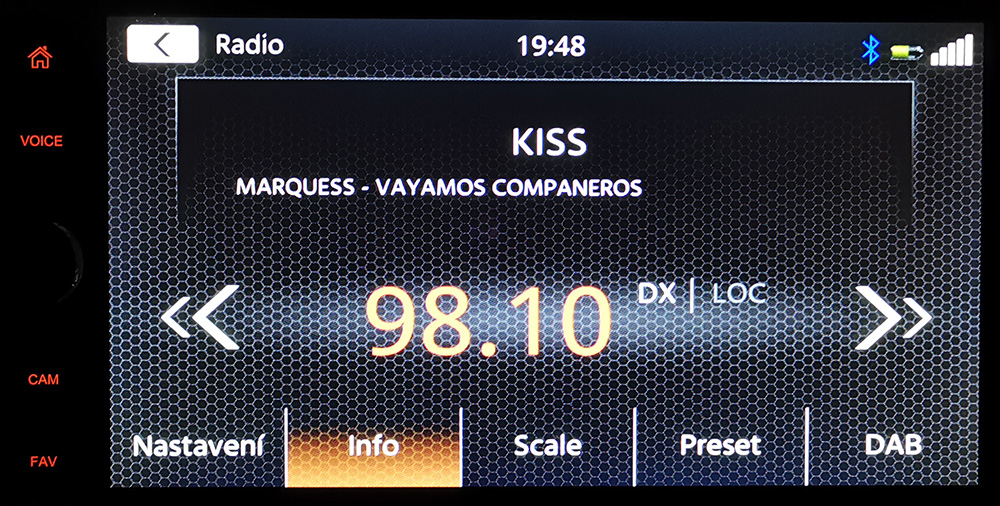
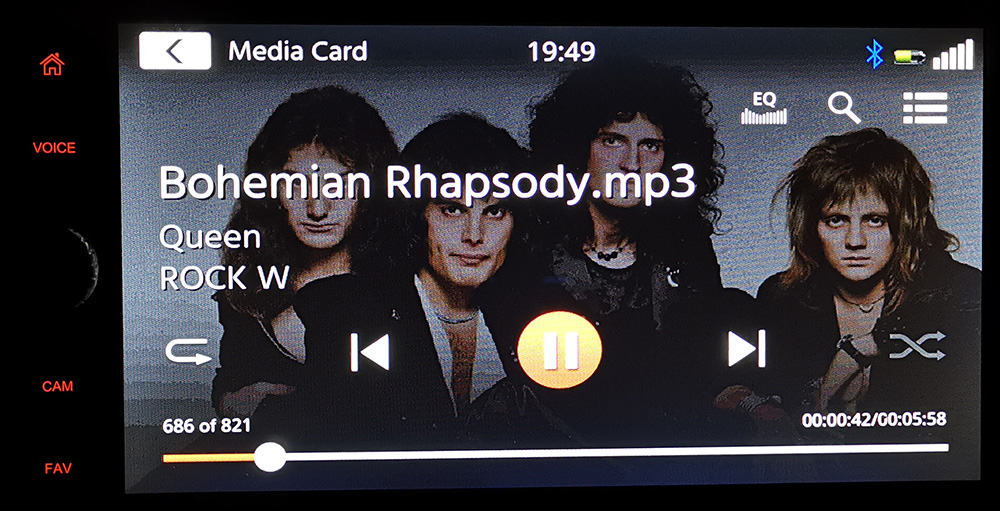
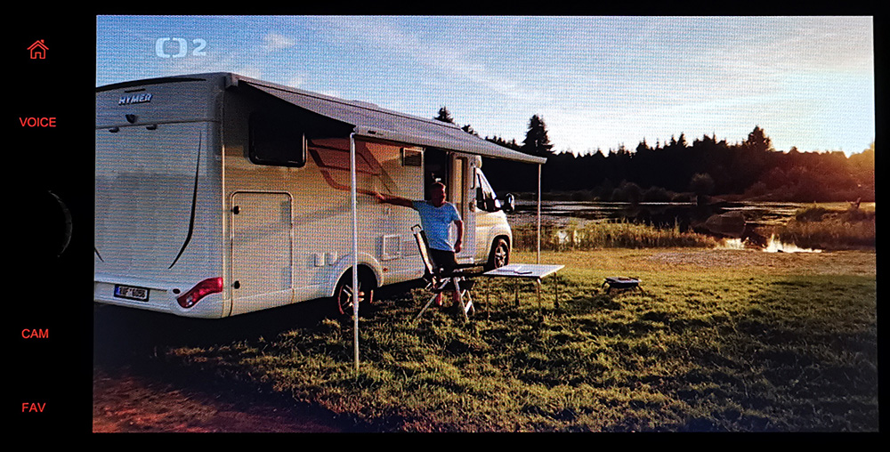
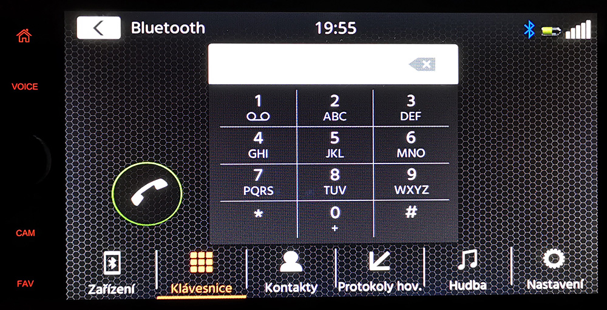
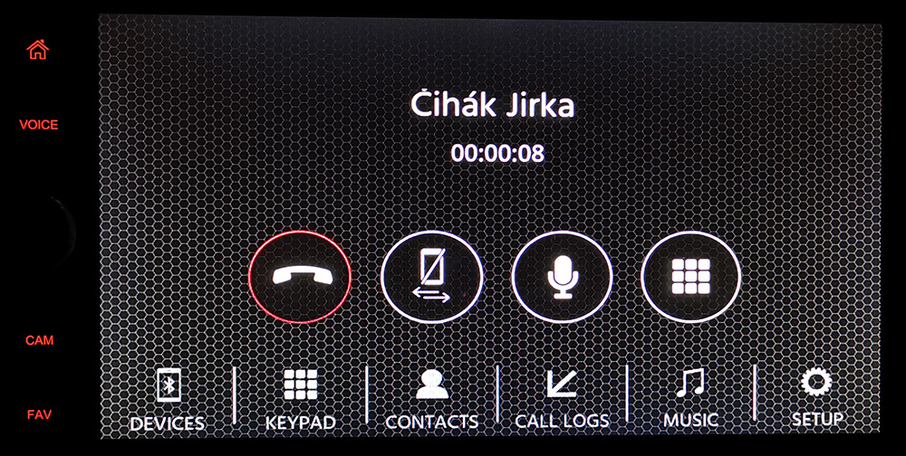
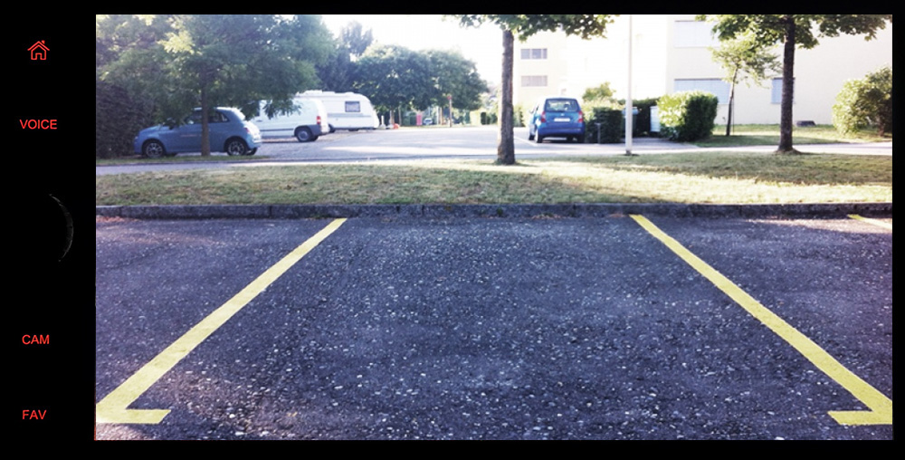
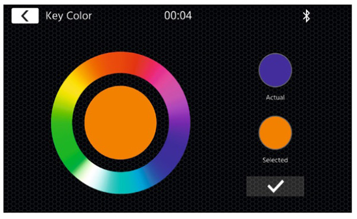

10.04.2021 - Zkušenost s AV jednotkou XZent X-227
Dodík byl z výroby osazený běžným, trochu lépe vybaveným autorádiem Pioneeer MVH-X580DAB. Tedy byl to 1DIN, s bluetooth a externím mikrofonem, digitálním DAB+ rádiem, USB vstupem. Nicméně jsem stále pokukoval po nějaké dobré 2DINové AV jednotce (bez navigace, tu mám samostaně v Garminu Camper 770D-T). Kvůli snadnějšímu ovládání telefonu a také možnosti pustit občas posádce nějaký ten film. Bohužel na trhu není moc dobrých modelů bez navigace, kterou nepotřebuji. V roce 2021 přišla firma ZENEC s modelem, který se mi podle technických parametrů moc líbil a hlavně měl všechno vybavení pro mé budoucí vylepšování tak, jak ho u svého auta zamýšlím. Zenec hodně své modely projektuje pro využití v obytných vozech a na jejich koncepci je to docela znát. Tou novinkou, o které bude dnes řeč, je model XZENT X-227. Jo a díky chlapům ze zastoupení Pilote za dobrý tip na nový typ :-)
{kind=link}
Jeho základní technické parametry jsou velmi slušné: kapacitní dotykový 16,5cm/6,5″ displej z pravého skla (rozlišení 800 x 400 pixelů), dvojitý DAB+ tuner s funkcemi sledování služby DAB-DAB, modul Bluetooth 4.2 s funkcí handsfree a A2DP, ovládání až dvou kamerových systémů s funkcí automatického přepínání, podpora 10 evropských jazyků, vč. češtiny, multibarevné RGB podsvícení senzorových tlačítek, vstup 2x USB, 1x microSD karta a 1x HDMI, samozřejmě FM RDS rádio, zesilovač má běžných 4x40W, k dispozici je dálkové ovládání, možnost napojení na ovládání na volantu a hlavně: AV jednotka si už rozumí jak s Apple CarPlay, tak s Android Link. A montážní hloubka X-227 je v porovnání s jinými 2-DIN modely cca o 20 mm menší. Takže dost místa pro kabeláž za AV jednotkou. Abych vůbec mohl o určitém typu uvažovat, musí mít ovládání hlasitosti pořádným otočným regulátorem. Proto byly modely bez něj z výběru okamžitě vyřazovány. Nesnáším tlačítka "volume +/-. Cena novinky lehce překračuje 10.000Kč, což byla cena akceptovatelná. A tak jsem do něj šel.
{kind=link}
Nebudeme tu provádět žádný video-unboxing. Nemám asi nadání, abych dramaticky natáčel, jak otevírám krabici s autorádiem a vytahuji z ní .... autorádio! Takže se omezím na konstatování, že v krabici byla AV jednotka, dálkové ovládání, demontážní lišty, jednoduchý montážní rámeček, hromada kabeláže vč. externího mikrofonu a USB kabelů a návod. Opatřil jsem si tedy speciální rámeček pro Fiat Ducato (není v ceně přístroje) a Dodíka zavezl do dílny na instalaci. Po převzetí auta zpět to v kabině vypadalo asi takto:
{kind=link}
Na levé straně čelního panelu jsou kromě otočného ovladače hlasitosti čtyři dotyková tlačítka, nad nimi je interní mikrofon (v menu si zvolíte, jestli chcete využívat interní nebo externí - v Dodíkovi mám externí mikrofon, vyvedený na kapličku přístrojů, viz. fotka). Mimochodem, externí mikrofony u "staréího" Pioneeru i u "nového" Zenecu byly navlas stejné.
Otočný ovladač má sdružené funkce: samozřejmě otáčením regulujete hlasitost, krátkým stiskem AV jednotku i zapínáte, dlouhým stiskem pak vypínáte. Když je X-227 v chodu, krátkým stiskem otočného ovladače aktivujete pauzu a dalším stiskem opět zvuk a případné přehrávání obnovíte. Šikovné a rychlé.
Poznámka: jen pro doplnění - jedná se opravdu o "pauzu". Takže rychlým stiskem při přehrávání zvuk ztichne a zároveň se pozastaví i přehrávané audio nebo video z flashky či karty. Samozřejmě pro rádio FM nebo DAB stisk funguje jen jako prosté "mute", vysílání pochopitelně běží dál, přístroj nemá pro tento účel žádnou vyrovnávací paměť.
Po zapnutí rádio startuje svůj systém asi 12-15 sekund, což je asi v normě.
1.tlačítko - Home (symbol domečku). Z jakéhokoliv režimu návrat do hlavního menu.
2.tlačítko - VOICE. Aktivace hlasového ovládání. Tady bohužel neporadím, takto funkce běží jen po připjení na iPhone od Apple a jejich CarPlay. Takže pro mne nic.
3.tlačítko - CAM. Přímá aktivace kamery. Jen jediným stiskem tak mohu kdykoliv spustit připojenou kameru. Tu první, hlavní. Pro spuštění druhé už musím do menu nebo... viz další tlačítko. Po opětovném stisknutí 3.tlačítka se signál z kamery odpojí. Super praktické.
4.tlačítko - FAV. Programovatelné tlačítko, ke kterému můžete přiřadit dvě libovolné funkce - jednu na krátký stisk, druhou na dlouhý stisk. Třeba právě okamžitou aktivaci druhé kamery, pokud je máte obě zapojeny. Nebo jakoukoliv jinou funkci nebo zdroj, který často využíváte. Extra super praktické.
Pod tlačítky je ještě čidlo pro dálkový ovladač a vedle je malá dírka pro reset napájeni.
Použitelná paměťová média:
Vstup na mikroSD kartu je v pravém horním rohu čelního panelu, oba USB vstupy jsou na zadní stěně AV jednotky, takže musíte vyvádět kabely. Buďto do místa, kde budete mít položený např. telefon, nebo signál z nich si můžete dát napojit např. do palubních USB zásuvek, když už v autě jsou. Toto řešení je u moderních přístrojů stále obvyklejší, USB konektor na čelním panelu zabírá zbytečně moc místa a přestavuje další plandající kabel více či méně překážející v okolí rádia. Kabely zezadu naopak odvedete tam, kde je opravdu potřebujete. Mimochodem, zadní panel rádia vypadá takto:
{kind=link}
Oba USB vstupy mohou napájet např. telefony nebo tablety. Dále se k nim mohou připojit externí paměťová média, tedy flash disky. Ale pozor: jen USB 1 slouží k připojení pro AndroidLink nebo CarPlay a také jen přes USB1 můžete v budoucnu aktualizovat firmware AV jednotky. No a tady se dostávám asi k jedinému podstatnějšímu zklamání z nového přístroje: Maximální kapacita Flash disků nebo i mikroSD karty, může být jen max. 32GB. Takže to dá dohromady nanejvýš 96GB, když připojíte vše, a to v dnešní době není nijak mnoho. Navíc, jak karta, tak fleška musí být naformátována jako FAT32 (zapomeňte na NTFS nebo exFAT), jen pak je AV jednotka pozná. Ale zase na druhou stranu, 32GB fleška nebo microSD karta teď stojí okolo 200Kč, 16GB dokonce jen okolo 150Kč/ks, takže se jich dá pořídit víc. No co, kdysi jsme tahali videokazety, audiokazety nebo CDčka a taky jsme žili, ne? Takže jsem se hned "inicializačně" vybavil :-)
{kind=link}
Osobně jsem si nechal oba kabely vyvést dolů k nápojovým držákům, kam obvykle ukládám telefon. Na USB1 vývodu mám na konci kablíku konektor USB-C (pro připojení telefonu) a na vývodu z USB2 mám velkou USB zásuvku (female) pro zapojování flešek. Kablík byl součástí příslušenství. No a když budu aktualizovat software, použiji na USB1 redukci. Tedy žádný problém. V budoucnu možná USB2 skončí v originální zásuvce, co je na palubní desce Ducata. Ještě uvidím. Na stále zasunutou microSD kartu si nahraji spoustu muziky a pár video-koncertů, bude stále v rádiu. Na flash discích budu mít pak filmy.
Základní obrazovka menu vypadá takto:
{kind=link}
Černé pozadí je k dispozici v šesti druzích, všechny jsou ale tmavé, resp. černé. Nabídka sahá této "síťky" co je na fotce, přes různé černo-šedé stínohry, až po tmavý "zenový" motiv písku, s položeným šutrem. Hodiny s datumem můžete nechat nebo jako druhou možnost pohybem prstu nahradit informací z právě přehrávaného zdroje. Spodní polovinu obrazovky zabírají kulaté ikony vstupů, ikon je dohromady dvanáct, vč. ikony pro Nastavení přístroje. Posouváte je pohybem prstu nebo stiskem šipek vpravo a vlevo, AV jednotka odpovídá na všechny pokyny poměrně velmi svižně.
{kind=link}
Pozn.: v tomto článku jsou některé přiložené fotografie z internetu a firemních zdrojů, proto někdy ta angličtina (jinak po zvolení češtiny jsou všechny popisky hezky česky). Fotky přímo z auta se dělají hůře a myslím, že je poznáte na první pohled. Kvůli lepšímu kontrastu a čitelnosti jsou dělány večer.
Analogové rádio
  Integrovaný FM RDS tuner je vybaven technologií DSP (Digital Sound Processor), která i u slabších vysílačů zajistí čistší příjem rádia. Radiostanice lze uložit do paměti na 18 různých pozic. Příjemné je, že na jedné obrazovce mohu přímo ladit frekvenci (nahoře) nebo listovat podle nalezených stanic (dole). Nebo zvolit samozřejmě zobrazení RDS, tedy názvu stanice a přehrávané skladby. V horní liště obrazovky je vždy šipka pro návrat do hlavního menu, čas a informace o případně připojeném telefonu.
Integrovaný FM RDS tuner je vybaven technologií DSP (Digital Sound Processor), která i u slabších vysílačů zajistí čistší příjem rádia. Radiostanice lze uložit do paměti na 18 různých pozic. Příjemné je, že na jedné obrazovce mohu přímo ladit frekvenci (nahoře) nebo listovat podle nalezených stanic (dole). Nebo zvolit samozřejmě zobrazení RDS, tedy názvu stanice a přehrávané skladby. V horní liště obrazovky je vždy šipka pro návrat do hlavního menu, čas a informace o případně připojeném telefonu.
{kind=link}
DAB+ rádio
{kind=link}
X-227 má dokonce dvojitý DAB+ tuner s funkcemi MOT Slideshow, dynamický seznam stanic, sledování služby DAB-DAB a DLS text. Tedy pokud je daná stanice vysílá. Samozřejmostí je pak krásně čistý příjem digitálního rádia a snadné ovládání. U duálního tuneru máte výrazně větší šanci, že budete digitální vysílání přijímat bez přerušení, nežli v případě jednoduchého DAB+ tuneru. U obou vestavěných rádií je příjemné, že poslední ikonou vpravo dole se můžete vždy rychle přepínat mezi analogem (FM) a digitálem (DAB).
Přehrávání hudby z paměťových médií
Podporované formáty zvuku a videa jsou: MP3, FLAC, AAC, AVI, MPEG-1/2, MPEG4, M4V (H.264), MKV 1080p, XviD. V manuálu je uvádějí s doplněním "mimo jiné". Čemuž úplně nerozumím ale i tak je jich dost a 99,9% uživatelů plně vyhoví. id3tagy zobrazují název skladby, interpreta a název alba. Obrázek by měl mít rozlišení 800x480b a zobrazuje se po celé ploše displeje na pozadí, mírně zatmavený. Běžně užívané čtvercové obrázky se nepříjemně roztáhnou. Běžné ovládácí funkce zahrnují opakované i náhodné přehrávání, možnost listování po složkách a 8pásmový grafický ekvalizér se 7 přednastavenými profily zvuku.
{kind=link}
Přehrávání videa z paměťových médií
Přehrávaný obraz je velmi kvalitní (což se na fotce špatně dokazuje) a jeho rozlišení 800x480b na obrazovce s úhlopříčkou 16,5cm přináší velmi slušnou ostrost. Přehrávání si poradilo opravdu s celou plejádou video formátů i různých rozlišení nahrávky. Až do FullHD (1920x1080) nikdy nezaváhal. Do 4K jsem už nešel. Přeci jen - musíme mít jen ty max. 32GB flešky. U zvuku pozor - přístroj film s nahraným prostorovým zvukem neschroustá, nahlásí vadný zvukový formát a obraz přehraje bez zvuku. Takže používejte jen nahrávky s mono či stereo zvukovým doprovodem. Při vypnutí motoru si AV jednotka pamatuje, kde skončila a po znovu naběhnutí začne přehrávat od místa přerušení. Jak u audio, tak video souborů. Paměťové médium ale musí zůstat zapojeno. Jakmile jej odpojíte, při znovu zapojení začne celý obsah načítat nově.
{kind=link}
Připojení telefonu přes Bluetooth
 Připojení telefonu je bez problémů, kontakty se natahují velmi rychle. Bluetooth je verze 4.2, funkce A2DP podporuje i streamování hudby s AVRCP 1.0. Zde druhá kritická připomínka: oba snímky dělí asi 20 sekund - když vstoupíte do režimu telefonu, menu je normálně v češtině, když jsem navázal hovor (sám se sebou), menu bylo najednou anglicky. Všiml jsem si toho až při přípravě tohoto článku. Ale kritická chyba to není a věřím, že nějaký budoucí update ji napraví.
{kind=link}
{kind=link}
Signál z vnějších kamer
Jak jsem již zmiňoval, specialitou modelu je možnost připojení dokonce dvou kamer. V Dodíkovi zatím zapojeny nejsou - na palubce mám samostatný monitor se stále zapnutým signálem ze zadní kamery. Takže vlastně zpětné zrcátko. Jednu bezdrátovou kameru bych mohl připojit i do navigace Garmin a dvě sem, do X227. A tak jsem jenom zkoušel a hrál si. Co mohu říct, tak po volbě menu kamera se obraz objeví během 1-2 sekund, což je super. O tom, co s nimi zamýšlím, napíši třeba někdy v budoucnosti, až se plán stane realitou.
{kind=link}
Pozn: po zveřejnění článku Tomáš Brabec z KaravanyPRO přidal důležitou informaci, že když vlezete do auta, nastartujete motor a ihned řadíte zpátečku, naskočí obraz z případně připojené couvací kamery prakticky okamžitě - má prioritu před spouštením celého systému AV jednotky. V takové situaci tedy moje poznámka o 15 sekundové lhůtě pro nabíhání systému neplatí. Což je príma.
AndroidLink a CarPlay
{kind=link}
Trochu jsem si při focení pro tento článek neuvědomil, že když připojím telefon přes AndroidLink a začnu zrcadlit funkce telefonu na obrazovku AV jednotky, nemohu tím telefonem fotit. Čtenář se tedy musí spokojit s informací, že to (alespoň AL) funguje a zobrazit například navigaci přes Google Maps není nic nemožného. Jablíčkáře zklamu, nemohl jsem vyzkoušet a tak nezbývá než věřit, že vše také dobře běží.
{kind=link}
Menu nastavení
{kind=link}
Menu je velmi přehledné a jasné. Na ukázku jsem vybral obrazovku, kde si můžete nastavit tlačítko oblíbených funkcí na čelním panelu. Prostě jen šipkami zvolíte, co tam chcete mít. Opravdu velmi jednoduché. Nastavení možných barev pro podsvětlení tlačítek je mraky, příležitost pro hračičky. Nastavení hodin a datumu je možné ručně nebo vzít signál z DAB+ a nemusíte se starat o nic.
{kind=link}
Ještě přidávám krátké video, abyste měli možnost vidět reakční dobu po zapnutí přístroje a při přepínání funkcí.
A to už je asi opravdu vše, nic dalšího mě nenapadá. Každopádně, po prvních pár dnech hraní si s novou AV jednotkou od Zenecu musím říct, že jsem spokojen. Omezení dané možností použít paměťová média jen do 32GB a někdy v menu drobné problémy s češtinou, se mi nezdají nijak fatální a jako protislužbu dostanete model opravdu dobře koncipovaný pro nás - bydlíkáře. Rychlý přístup přes tlačítka na čelním panelu, duální DAB+ tuner, vstup na dvě kamery, výborný obraz i zvuk, jsou atributy, které by neměly nikoho zklamat. XZENT X227 je prostě dobrým modelem pro všechny, kteří o pořízení 2DIN rádia uvažují a nepotřebují navigaci. V takovém případě moc konkurentů na trhu (s otočným regulátorem hlasitosti) nebude. Snad možná, abych něco jmenoval, tak Blaupunkt Camper 590 DAB a rozhodnutí je už na každém budoucím uživateli.
{kind=link}
Už se tedy těším na další cesty, na kterých nám už bude vyhrávat tento krasavec. No a kabině řidiče v Dodíkovi navíc i docela sluší :-)
{kind=link}